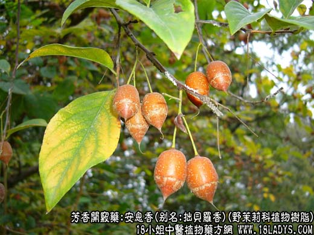

【中药概述】
安息香，别名拙贝罗香，为野茉莉科植物安息香树、白花树的干燥树脂。辛、苦，温。归心、肝、脾经。
1．开窍醒神：用于中风痰厥、气郁暴厥、中恶昏迷等。
2．活血行气止痛：用于心腹疼痛，产后血晕、小儿惊风，风湿痹痛等症。
【药效鉴别】
安息香长于开窍祛痰，行气活血。
【临证应用】
《世医得效方》安息香研末，沸汤服5g。治卒然心痛，或久年频发。
【药理作用】
1.有刺激性祛痰作用。
2.有局部防腐作用。
【化学成分】
苏门答腊香含树脂约90％、游离的苯甲酸和桂皮酸、香荚醛；泰国香含树脂约70～80％，另含游离苯甲酸等。
【用量用法】
0.3——1g，宜入丸、散剂。不宜入汤剂。
【注】
前者习称“苏门答腊香”；后者主要分布于越南、泰国、老挝，习称“泰国香”。
以上是关于清热解毒功效之安息香的功效与作用，查询更多中药的功效与作用请关注中药大全。